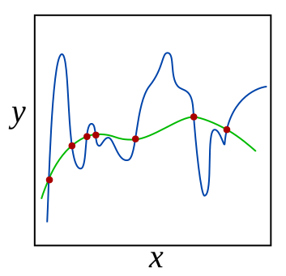

2. Machine learning for structured data - Regression¶
2.1. Classification vs. regression¶
Regression and classification are usually considered as two types of supervised machine learning. Although, for example, clustering can be considered as classification, there are significant differences between them. Regression and classification both aim to utilise a training dataset to make predictions. Basically, the only difference is that the output variable in a regression model is numerical. The aim in regression is to build a function that models the connection between the input values and the output value (values).
2.2. Outliers¶
It is important to identify any existence of unusual observations in a data set. An observation that is unusual in the vertical direction is called an outlier. If we are sure that observation is an outlier and should be removed, we have two options. Either we move those outliers to specific quantiles, which is called winsorisation. Or we remove those outliers altogether.
2.3. Regression models¶
2.3.1. Linear regression¶
A linear regression model assumes that the regression function \(E(Y|X)\) is linear in the inputs \(x_1,...,x_k\). The basic model is of the form $\(\hat{y}=b_0+b_1x_1+...+b_kx_k,\)\( where the training data is used to learn the optimal parameters \)b_0,…,b_k$. Linear models are very old and were the most important prediction tools in the precomputer era. However, they are still useful today as they are simple and often provide an adequate and interpretable description of how the inputs affect the output. Furthermore, they sometimes outperform nonlinear models in prediction, especially when the number of training cases is low. Their scope can be considerably expanded if we apply these methods to the transformation of the inputs.

2.3.2. Regularised regression¶
One way to expand the scope of linear models is to include regularisation to them. This method constrains the coefficient estimates and forces them towards zero. It can be easily proven that this approach is an efficient way to counter overfitting and makes more robust models. The two best-known regularisation techniques are ridge regression and the lasso.
2.3.3. Ridge regression¶
In the ordinary least squares regression, we aim to minimise residual sum of squares. $\(\sum_{i=1}^n{y_i-\hat{y_i}}\)\( In ridge regression, we minimise a slightly different quantity \)\(\sum_{i=1}^n{y_i-\hat{y_i}}+\lambda\sum_{j=1}^k{\beta_j^2}\)\( Thus, there is a penalty term that can be decreased by decreasing the size of the parameters. The lambda \)\lambda\( in the model is a hyperparameter that needs to be selected beforehand. For example, cross-validation can be used to select the optimal lambda value. If we increase lambda, the second term becomes more important, decreasing the size of the parameters. This will decrease the variance of the predictions but increase the bias (bias-variance tradeoff will be discussed more later). Thus, the solution of ridge regression depends on the lambda parameter. One thing to remember is that the intercept \)b_o$ should not be included in the regularisation term.
Usually, ridge regression is useful when the number of variables is almost as large as the number of observations. In these situations, the OLS estimates will be extremely variable. Ridge regression works even when the number of parameters is larger than the number of observations.
2.3.4. LASSO regression¶
Although ridge regression decreases the size of the parameters, it is not decreasing them to zero. Thus, the complexity of the model is not decreasing. Lasso regression solves this issue with a small change. In the penalty term, the lasso uses the parameters’ absolute values instead of the squared values $\(\sum_{i=1}^n{y_i-\hat{y_i}}+\lambda\sum_{j=1}^k{|\beta_j|}\)\( As with ridge regression, the lasso shrinks the coefficient estimates towards zero. However, the small change in the penalty term can force some of the coefficients to zero if the lambda parameter is large enough. Hence, the lasso performs also variable selection making the interpretation of the model easier. Depending on the value of \)\lambda$, the lasso can produce a model involving any number of variables.
2.3.5. Ensemble methods for regression¶
We already discussed ensemble methods in the previous section, and the details of these methods can be read there. They can also be used for regression. As ensemble methods often use decision trees as weak estimators, and for regression purposes, we only need to use CARTs as weak estimators.
2.3.6. Shallow neural network¶
Although we will mainly discuss neural networks in the following chapters, I will shortly introduce shallow neural networks. They were already used 30 years ago and often in similar situations where other methods of this section are used. As structured data is still an essential form of accounting data, it is important to know those neural network architectures often used to analyse them.
2.3.7. Neural networks¶
Neural networks are a large class of models and learning methods. The most traditional is the single hidden layer back-propagation network or a single layer perceptron.

The above networks belong to a class of networks called feed-forward neural networks. The name comes from the fact that we calculate linear combinations of inputs at different layers, pass the results to a non-linear activation function and feed the value forward. By combining these non-linear functions of linear combinations into a network, we get a very powerful non-linear estimator.
Basically, deep learning means that we add many layers to the network. (The paradigm of deep learning is a little bit deeper than that, but we do not go into details at this point.)
Despite the hype surrounding neural networks, they are no different from other non-linear statistical models. They are just networks of neurons that calculate linear combinations of input values and input these linear combinations to non-linear activation functions. The result is a powerful learning method with widespread applications in many fields.
2.3.8. Multilayer perceptron¶
In this chapter, we will use multilayer perceptron as an example of a shallow neural network. The multilayer perceptron adds neurons between the input nodes and the outputs, and this will make more complex neural networks. The MLP is one of the most common neural networks in use. The training happens in two phases. The forward phase calculates predictions from input values, and the predictions are then compared to the correct output values with a suitable loss function. In the backward phase, gradient descent is used to optimise the network parameters so that the difference between the predictions and the correct output values is decreased.
2.4. Performance of regression models¶
Evaluating the performance of regression models is important because there is no one method that would dominate other models all the time. Hence it is an important task to decide for any given set of data which method produces the best results. Selecting the best model is far from trivial and can be the most challenging task in a practical ML project.
This section will briefly discuss some of the concepts when doing performance analysis of regression models.
2.4.1. Coefficient of determination¶
One of the ways to measure the contribution of input values \(x\) in predicting \(y\) is to consider how much the prediction errors were reduced by using the information provided by the variables \(x\). The coefficient of determination \(R^2\) is a value between zero and one that can be interpreted to be the proportion of variability explained by the regression model. Thus, a value of \(R^2=0.75\) means that the model explains 75 % of the variation of y. So, the best model is the one that has the highest \(R^2\) and thus, explains most of the predicted variables’ variation.
2.4.2. MSE¶
To evaluate the performance of a statistical learning method on a given data set, we need some way to measure how well its predictions match the observed data. We need to quantify the extent to which the predicted response value for a given observation is close to the true response value for that observation. The coefficient of determination is the standard way to evaluate models in the traditional statistics community. However, the machine learning community prefers using the mean squared error. The MSE is the theoretically correct approach to evaluate models. It is defined as $\(MSE=\frac{1}{n}\sum_{i=1}^n{(y_i-\hat{y_i})^2}\)$. The MSE will be small if the predicted responses are very close to the correct responses and will be large if the predicted and true responses differ substantially for some of the observations
The MSE can be computed using the training data, and then it is called the in-sample MSE. However, more important for practical applications is the out-of-sample MSE. In general, we do not care how well the method works on the training data. Instead, we are interested in the accuracy of the predictions we obtain when applying our method to previously unseen test data. For example, if we are developing an algorithm to predict a stock’s price based on the previous values, we do not care how well our method predicts last week’s stock price because we already know that. We instead care about how well it will predict tomorrow’s price or next month’s price. Therefore, when comparing ML models, we should always compare them with the out-of-sample MSE using a test set.
In some settings, we may have a test data set available. We can then evaluate the MSE on the test observations and select the learning method for which the test MSE is the smallest. If there are no test observations available, one might think that the second-best option would be to use the in-sample MSE for model comparison. Unfortunately, there is no guarantee that the method with the lowest training MSE will also have the lowest test MSE. This is related to the fact that many ML models specifically optimise the coefficients so that the in-sample MSE is minimised.
As model flexibility increases, training MSE will decrease, but the test MSE may not. When a given method yields a small training MSE but a large test MSE, we are said to be overfitting the data. This happens because our statistical learning procedure is picking up some patterns that are just caused by random chance rather than by real associations between the predictors and the predicted value. When we overfit the training data, the test MSE can grow to very large values, because the algorithm tries to model complex patterns caused by pure chance. Overfitting refers specifically to the case in which a less flexible model would have yielded a smaller test MSE.
2.4.3. Bias-Variance tradeoff¶
Mean square error measures, on average, how close a model comes to the true values. Hence, this could be used as a criterion for determining the best model. It can proven that MSE is a composition of two parts, bias and variance.
Variance refers to the sensitivity of the model if we estimated it using a different training data set. Even if sampling is perferct, different training sets will results in a slightly different model. But ideally the model should not vary too much between training sets. However, if a model has high variance then small changes in the training data can result in large changes. In general, more flexible models (what machine learning models usually are) have higher variance.
On the other hand, bias refers to the error that is introduced by approximating an association, which may be extremely complicated, by a much simpler model. For example, linear regression assumes that there is a linear relationship between the predicted value and the predictors. It is unlikely that any association truly has a simple linear relationship, and so linear regressiom models will always have some bias in the estimates. Generally, more flexible methods result in less bias.
To conclude, as we use more flexible methods, the variance will increase and the bias will decrease. The relative rate of change of these two quantities determines whether the test MSE increases or decreases. As we increase the flexibility of a model, the bias tends to initially decrease faster than the variance increases. Consequently, the expected test MSE declines. However, at some point increasing flexibility does not decrease bias any more but variance continues to increase, thus, increasing also the overall MSE. This phenomenon is referred as the bias-variance trade-off, because it is easy to obtain a model with extremely low bias but high variance (for instance, by drawing a curve that passes through every single training observation) or a model with very low variance but high bias (by fitting a horizontal line to the data). The challenge lies in finding a method for which both the variance and the squared bias are low. Machine learning methods are usually extremely flexible and hence can essentially eliminate bias. However, this does not guarantee that they will outperform a much simpler method such as linear regression due to higher variance. Cross-validation, which we discussed in the previous chapter, is a way to estimate the test MSE using the training data, and search for the best model.
2.5. Examples¶
2.5.1. Scikit-learn¶
Scikit-learn is a multi-purpose machine learning library. It has modules for many different machine learning approaches. It is not the best library in any machine learning field but very good at most of them. Also, all the approaches use the common workflow approach of the library. Thus, by learning to do one machine learning analysis, you learn to do them all.
Scikit-learn has libraries for classification, regression, clustering, dimensionality reduction and model selection. It also has an extensive library of methods for data pre-processing.
A very convenient feature in Scikit-learn is pipeline that you can use to construct full workflows of machine learning analyses.
There should be no difficulties to install Scikit-learn. With Python/Pip you just execute pip install scikit-learn and with Anaconda you just install it from the menu (or use conda install scikit-learn in the command line). (Actually, you should not need to do that as Scikit-learn is installed in Anaconda by default.)
Again, the best way to learn Scikit-learn is by going through examples. Thus, more details are in the following examples.
import pandas as pd
import numpy as np
import matplotlib.pyplot as plt
from scipy import stats
plt.xkcd()
<matplotlib.pyplot._xkcd at 0x298f7745fa0>
Example data from www.kaggle.com/c/companies-bankruptcy-forecast
table_df = pd.read_csv('ml_data.csv')[['Attr1','Attr8','Attr21','Attr4',
'Attr5','Attr29','Attr20',
'Attr15','Attr6','Attr44']]
The above link has the explanation for all the variables. The original data has 65 variables, but we are here using a subsample of 10 variables. With rename() we can rename the variables to be more informative.
table_df.rename({'Attr1' : 'ROA','Attr8' : 'Leverage','Attr21' : 'Sales-growth',
'Attr4' : 'Current ratio','Attr5' : 'Quick ratio','Attr29' : 'Log(Total assets)',
'Attr20' : 'Inventory*365/sales','Attr15' : 'Total_liab*365/(gross_prof+depr)',
'Attr6' : 'Ret_earnings/TA','Attr44' : 'Receiv*365/sales'},axis=1,inplace=True)
table_df
| ROA | Leverage | Sales-growth | Current ratio | Quick ratio | Log(Total assets) | Inventory*365/sales | Total_liab*365/(gross_prof+depr) | Ret_earnings/TA | Receiv*365/sales | |
|---|---|---|---|---|---|---|---|---|---|---|
| 0 | -0.031545 | 0.641242 | -0.016440 | -0.013529 | 0.007406 | -0.631107 | -0.070344 | -0.005305 | -0.016047 | -0.009084 |
| 1 | -0.231729 | 0.074710 | -0.016961 | -0.080975 | 0.007515 | -1.168550 | -0.047947 | -0.119627 | -0.016047 | -0.009659 |
| 2 | -0.058602 | -0.456287 | -0.017504 | -0.189489 | 0.006572 | 0.096212 | 0.001761 | 0.009484 | -0.016047 | -0.016517 |
| 3 | -0.069376 | -0.462971 | -0.016114 | -0.140032 | 0.007477 | 0.296277 | -0.006430 | 0.045912 | -0.010915 | 0.020758 |
| 4 | 0.236424 | 0.097183 | -0.016046 | -0.014680 | 0.007879 | -0.501471 | -0.043107 | -0.021015 | -0.016047 | -0.011036 |
| ... | ... | ... | ... | ... | ... | ... | ... | ... | ... | ... |
| 9995 | -0.079533 | -0.374739 | -0.016179 | -0.189873 | 0.006687 | 0.162211 | 0.002114 | 0.081838 | -0.006462 | 0.006482 |
| 9996 | -0.081046 | 0.689695 | -0.016507 | 0.021280 | 0.007497 | 0.630702 | -0.022646 | -0.018260 | -0.034968 | -0.017303 |
| 9997 | -0.230571 | -0.471830 | -0.016167 | -0.222373 | 0.006716 | 1.249499 | -0.034307 | -0.059516 | -0.013742 | -0.006031 |
| 9998 | -0.108156 | -0.355796 | -0.016352 | -0.042692 | 0.008123 | -0.640261 | -0.059005 | 0.021498 | -0.018374 | 0.001036 |
| 9999 | -0.068674 | 0.293253 | -0.016174 | 0.039538 | 0.007850 | 0.564555 | -0.062083 | -0.012039 | 0.001952 | -0.015710 |
10000 rows × 10 columns
With the clip method, you can winsorise the data. Here extreme values are moved to 1 % and 99 % quantiles.
table_df = table_df.clip(lower=table_df.quantile(0.01),upper=table_df.quantile(0.99),axis=1)
With hist() you can check the distributions quickly. The most problematic outliers have been removed by winsorisation.
table_df.hist(figsize=(14,14),grid=False,edgecolor='k',color='lightgray')
plt.show()
With corr() you can check the correlations. There is multicollinearity present, but for example with ensemble methods, multicollinearity is much less of a problem.
table_df.corr()
| ROA | Leverage | Sales-growth | Current ratio | Quick ratio | Log(Total assets) | Inventory*365/sales | Total_liab*365/(gross_prof+depr) | Ret_earnings/TA | Receiv*365/sales | |
|---|---|---|---|---|---|---|---|---|---|---|
| ROA | 1.000000 | 0.253631 | 0.198471 | 0.239780 | 0.073774 | -0.022929 | -0.199351 | 0.031788 | 0.482101 | -0.088218 |
| Leverage | 0.253631 | 1.000000 | -0.062703 | 0.678369 | 0.137512 | 0.092470 | 0.017957 | -0.088598 | 0.277234 | -0.007704 |
| Sales-growth | 0.198471 | -0.062703 | 1.000000 | -0.050987 | 0.008612 | 0.124345 | -0.080525 | 0.005148 | 0.008116 | -0.018546 |
| Current ratio | 0.239780 | 0.678369 | -0.050987 | 1.000000 | 0.175938 | -0.055648 | 0.143823 | -0.059035 | 0.169986 | 0.097054 |
| Quick ratio | 0.073774 | 0.137512 | 0.008612 | 0.175938 | 1.000000 | -0.009259 | -0.067865 | -0.067402 | 0.071122 | 0.026820 |
| Log(Total assets) | -0.022929 | 0.092470 | 0.124345 | -0.055648 | -0.009259 | 1.000000 | 0.065786 | 0.009114 | 0.199229 | 0.116596 |
| Inventory*365/sales | -0.199351 | 0.017957 | -0.080525 | 0.143823 | -0.067865 | 0.065786 | 1.000000 | 0.026625 | -0.109237 | 0.154436 |
| Total_liab*365/(gross_prof+depr) | 0.031788 | -0.088598 | 0.005148 | -0.059035 | -0.067402 | 0.009114 | 0.026625 | 1.000000 | 0.005612 | 0.018199 |
| Ret_earnings/TA | 0.482101 | 0.277234 | 0.008116 | 0.169986 | 0.071122 | 0.199229 | -0.109237 | 0.005612 | 1.000000 | -0.052223 |
| Receiv*365/sales | -0.088218 | -0.007704 | -0.018546 | 0.097054 | 0.026820 | 0.116596 | 0.154436 | 0.018199 | -0.052223 | 1.000000 |
The predictors are everything else but ROA, which is our predicted variable.
X = table_df.drop(['ROA'],axis=1)
y = table_df['ROA']
from sklearn.model_selection import train_test_split
Let’s make things difficult for OLS (very small train set). Here we use only 1 % of the data for training to demonstrate the strengths of ridge and lasso regression, which are usually usefuly only when n is close to p.
# Split data into training and test sets
X_train, X_test , y_train, y_test = train_test_split(X, y, test_size=0.99, random_state=1)
len(X_train)
100
2.5.2. Linear model¶
Although Scikit-learn is a ML library, it is possible to do a basic linear regression analysis with it. (All ML methods are statistical methods. The separation between them is artificial.)
import sklearn.linear_model as sk_lm
We define our LinearRegression object.
model = sk_lm.LinearRegression()
fit() can be used to fit the data.
model.fit(X_train,y_train)
LinearRegression()
coef_ -attribute has the coefficients of each variable and intercept_ has the intercept of the linear regression model.
model.coef_
array([-4.95131952e-03, -2.16483361e+01, 2.56318923e-01, 1.57522210e+00,
-9.94242834e-03, -4.97093290e-01, 7.12480216e-02, 1.56827847e+00,
-2.12876691e+00])
model.intercept_
-0.3581128448264647
score() can be used to measure the coefficient of determination of the trained model. How much our variables are explaining of the variation of the predicted variable.*
model.score(X_test,y_test)
0.14662911115790167
A short code to draw scatter charts between every feature and ROA. The blue dots are the correct values and the red dots are the predictions of the model.
plt.rcdefaults()
fig, axs = plt.subplots(3,3,figsize=(15,12))
for ax,feature,coef in zip(axs.flat,X_test.columns,model.coef_):
ax.scatter(X_test[feature],y_test,alpha=0.4)
ax.plot(X_test[feature],model.predict(X_test),'ro',alpha=0.1)
ax.set_title(feature)
plt.subplots_adjust(hspace=0.2)
Mean squared error can be used to the measure the performance. Less is better.
from sklearn.metrics import mean_squared_error
mean_squared_error(y_test,model.predict(X_test))
0.029838723728760296
2.5.3. Ridge regression¶
Ridge regression counters overfitting by adding a penalty on the size if the coefficients of the standard linear regression model. So it is a regularisation method.

We can optimise the alpha parameter of the error function automatically using RidgeCV.

alpha_set = np.logspace(-5,5,20)
ridgecv = sk_lm.RidgeCV(alphas = alpha_set,cv=10, scoring = 'neg_mean_squared_error', normalize = True)
Otherwise similar steps. Define the object, use the fit() function, analyse the results with coef_, intercept_, score() and mean_squared_error().
ridgecv.fit(X_train,y_train)
RidgeCV(alphas=array([1.00000000e-05, 3.35981829e-05, 1.12883789e-04, 3.79269019e-04,
1.27427499e-03, 4.28133240e-03, 1.43844989e-02, 4.83293024e-02,
1.62377674e-01, 5.45559478e-01, 1.83298071e+00, 6.15848211e+00,
2.06913808e+01, 6.95192796e+01, 2.33572147e+02, 7.84759970e+02,
2.63665090e+03, 8.85866790e+03, 2.97635144e+04, 1.00000000e+05]),
cv=10, normalize=True, scoring='neg_mean_squared_error')
As you can see, the coefficients have decreases. But only a little.
ridgecv.coef_
array([ 2.50744525e-02, -1.39381411e+01, 1.30736089e-01, 4.81161991e-01,
-7.84082924e-03, -3.00898196e-01, 7.75623294e-02, 1.00070461e+00,
-1.68304267e+00])
ridgecv.intercept_
-0.22779312775441024
ridgecv.alpha_
0.5455594781168515
The coefficient of determination is now much improved (linear regression ~0.15).
ridgecv.score(X_test,y_test)
0.2035076502930907
Ridge regression decreases the variation of predictions.
fig, axs = plt.subplots(3,3,figsize=(15,12))
for ax,feature,coef in zip(axs.flat,X_test.columns,model.coef_):
ax.scatter(X_test[feature],y_test,alpha=0.3)
ax.plot(X_test[feature],ridgecv.predict(X_test),'r.',alpha=0.3)
ax.set_title(feature)
MSE has also improved.
mean_squared_error(y_test,ridgecv.predict(X_test))
0.027849924910402172
2.5.4. The Lasso¶
Let’s try next the lasso. It uses stronger regularisation (the absolute values of parameters in the regularisation term)
alpha_set = np.logspace(-5,5,21)
lassocv = sk_lm.LassoCV(alphas = None,cv=5,max_iter=100000, normalize = True)
lassocv.fit(X_train,y_train)
LassoCV(cv=5, max_iter=100000, normalize=True)
Lasso is different in that it decreases the coefficients of variables more easily to zero.
lassocv.coef_
array([ 0. , -3.47515588, 0.17823162, 0. , -0. ,
-0.10806394, 0. , 1.17143038, -0. ])
lassocv.intercept_
-0.03639170916960472
lassocv.alpha_
0.002034766231861985
Now the coefficient of determination is even better.
lassocv.score(X_test,y_test)
0.22166815970926756
As you can see from the figure below. Regularisation decreases the sizes of parameters and this decreases the variation of predictions.
fig, axs = plt.subplots(3,3,figsize=(15,12))
for ax,feature,coef in zip(axs.flat,X_test.columns,model.coef_):
ax.scatter(X_test[feature],y_test,alpha=0.3)
ax.plot(X_test[feature],lassocv.predict(X_test),'r.',alpha=0.3)
ax.set_title(feature)
MSE has also improved.
mean_squared_error(y_test,lassocv.predict(X_test))
0.02721492970453323
By using larger alpha value, we can force more variables to zero.
lasso_model = sk_lm.Lasso(alpha = 0.003,max_iter=100000, normalize = True)
lasso_model.fit(X_train,y_train)
Lasso(alpha=0.003, max_iter=100000, normalize=True)
Now only two coefficients in our model are different from zero (Current ratio and Retained earnings / Total assets)
lasso_model.coef_
array([ 0. , -0. , 0.14767181, 0. , -0. ,
-0. , 0. , 0.98729175, -0. ])
lasso_model.intercept_
0.01763588853660874
The score decreases a little because we are forcing alpha to be too large.
lasso_model.score(X_test,y_test)
0.21680467823704752
Now the variation is even smaller.
fig, axs = plt.subplots(3,3,figsize=(15,12))
for ax,feature,coef in zip(axs.flat,X_test.columns,model.coef_):
ax.scatter(X_test[feature],y_test,alpha=0.3)
ax.plot(X_test[feature],lasso_model.predict(X_test),'r.',alpha=0.3)
ax.set_title(feature)
mean_squared_error(y_test,lasso_model.predict(X_test))
0.027384984814107477
2.5.5. Linear reference model¶
In the following, we use a more reasonable division between training and testing datasets. With so large data, there is no need for Ridge or Lasso regularisation and we use a basic linear model as a reference. 80% / 20% -split is commonly used.
# Split data into training and test sets
X_train, X_test , y_train, y_test = train_test_split(X, y, test_size=0.2, random_state=1)
The same steps as before.
ref_model = sk_lm.LinearRegression()
ref_model.fit(X_train,y_train)
LinearRegression()
With 8000 observations (instead of 100) we get a much better model.
ref_model.score(X_test,y_test)
0.36242954547971373
mean_squared_error(y_test,ref_model.predict(X_test))
0.022571114141273284
2.5.6. Random forest¶
Random forest has proven to be a very powerful prediction model.
from sklearn.ensemble import RandomForestRegressor
The strength of Scikit-learn is that the steps for building a model are similar for every model. Define an object, fit it to data, analyse the results.
r_forest_model = RandomForestRegressor(random_state=0)
r_forest_model.fit(X_train,y_train)
RandomForestRegressor(random_state=0)
With the RF model, there is a much better fit between the predicted values and the correct test values.
fig, axs = plt.subplots(3,3,figsize=(15,12))
for ax,feature,coef in zip(axs.flat,X_test.columns,model.coef_):
ax.scatter(X_test[feature],y_test,alpha=0.6)
ax.plot(X_test[feature],r_forest_model.predict(X_test),'r.',alpha=0.3)
ax.set_title(feature)
Scikit-Learn has a feature_importances_ attribute to explain the importance of different parameters in explaining the predictions.
pd.DataFrame([X_train.columns,r_forest_model.feature_importances_]).transpose().sort_values(1,ascending=False)
| 0 | 1 | |
|---|---|---|
| 6 | Total_liab*365/(gross_prof+depr) | 0.770289 |
| 0 | Leverage | 0.133804 |
| 7 | Ret_earnings/TA | 0.018549 |
| 4 | Log(Total assets) | 0.014619 |
| 1 | Sales-growth | 0.014376 |
| 5 | Inventory*365/sales | 0.013384 |
| 3 | Quick ratio | 0.013282 |
| 2 | Current ratio | 0.011366 |
| 8 | Receiv*365/sales | 0.010330 |
The coefficient of determination and MSE are significantly better with the RF model.
r_forest_model.score(X_test,y_test)
0.8711978080679903
mean_squared_error(y_test,r_forest_model.predict(X_test))
0.004559823867514363
2.5.7. Gradient boosting¶
Random forest and gradient boosting are often the best ensemble models in applications. The gradient boosting model is defined using the same steps.
from sklearn.ensemble import GradientBoostingRegressor
gradient_model = GradientBoostingRegressor(random_state=0)
gradient_model.fit(X_train,y_train)
GradientBoostingRegressor(random_state=0)
fig, axs = plt.subplots(3,3,figsize=(15,12))
for ax,feature,coef in zip(axs.flat,X_test.columns,model.coef_):
ax.scatter(X_test[feature],y_test,alpha=0.6)
ax.plot(X_test[feature],gradient_model.predict(X_test),'r.',alpha=0.3)
ax.set_title(feature)
pd.DataFrame([X_train.columns,gradient_model.feature_importances_]).transpose().sort_values(1,ascending=False)
| 0 | 1 | |
|---|---|---|
| 6 | Total_liab*365/(gross_prof+depr) | 0.850534 |
| 0 | Leverage | 0.076763 |
| 7 | Ret_earnings/TA | 0.037968 |
| 1 | Sales-growth | 0.016838 |
| 4 | Log(Total assets) | 0.008851 |
| 3 | Quick ratio | 0.002994 |
| 5 | Inventory*365/sales | 0.002630 |
| 2 | Current ratio | 0.001712 |
| 8 | Receiv*365/sales | 0.001708 |
This time, the random forest model wins the competition.
gradient_model.score(X_test,y_test)
0.8442057645656127
mean_squared_error(y_test,gradient_model.predict(X_test))
0.005515389625743821
2.5.8. Neural networks (multi-layer perceptron)¶
from sklearn.neural_network import MLPRegressor
mlp_model = MLPRegressor(hidden_layer_sizes=(100),max_iter=5000)
mlp_model.fit(X_train,y_train)
MLPRegressor(hidden_layer_sizes=100, max_iter=5000)
fig, axs = plt.subplots(3,3,figsize=(15,12))
for ax,feature,coef in zip(axs.flat,X_test.columns,model.coef_):
ax.scatter(X_test[feature],y_test,alpha=0.6)
ax.plot(X_test[feature],mlp_model.predict(X_test),'r.',alpha=0.3)
ax.set_title(feature)
mlp_model.score(X_test,y_test)
0.5702717022511561
mean_squared_error(y_test,mlp_model.predict(X_test))
0.015213136665064223